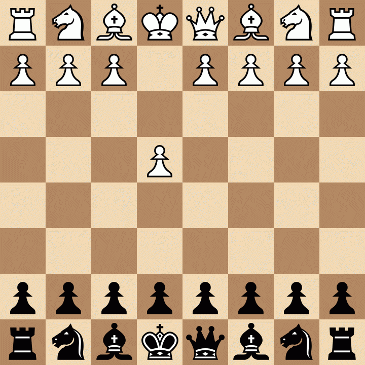

The chessboard consists of 64 squares, 8 columns horizontally and 8 rows vertically, colored alternately white and black.

1) Board Setup
Rooks are placed in the edges of the board
knights are placed next of the Rooks
Bishops are placed next of the knights
The queen and king go next to the Bishops, the queen always goes in her color (e.g. if the queen is white, she will go next to the bishop whose square is black) and the king goes in the opposite color.
The pawns enter the second row.
2) Pieces moves
The rooks move straight in all directions (within the chessboard).
The knights move in a "Γ" shape (within the chessboard), meaning 2 moves forward or backward and one move to the right or left.
The bishops move sideways in the color they initially started on the chessboard, for example (the bishop who started on a white-colored square moves sideways only on white squares)
The queen can make the moves of the bishop and the rook simultaneously within the chessboard (i.e. she can move both sideways and straight).
The king can move in all directions by one square.
Pawns move two squares forward in their starting position and one square forward in all other positions (they cannot move backwards).
Note: The player with white pieces moves first. Also, no two pieces can be on the same square at the same time, nor can any piece pass over a square that contains a piece of the same color (except for knights, which are the only pieces that can pass over other pieces).
3) Captures
When two pieces are on the same square after a move,the second piece captures the first (the first piece that was captured is removed from the board).
Each piece captures exactly as its movements are, e.g. the rook captures straight, the bishop captures sideways, etc.
Note: Pawns can only capture sideways one square and when any other piece (of the same team or not) is in front of the pawn, the pawn cannot move forward but it can capture sideways. Also, THE KING CANNOT BE CAPTURED .
4) Pieces Values
Every piece in chess has a specific value that helps the player to evaluate a position
Type
Value
Rook:
5
Knight:
3
Bishop:
3
Queen:
9
King:
infinite
Pawn:
1
5) Check
When a king is under threat, we say that it is in check(The king can be catured on the next move which is illegal). When the king is in check, it must either move to stop being in check or a piece must make a move to block the path of the opponent's piece or capture the opponent piece that is threatening the king.
6) Special Moves
Promotion: Once a pawn reaches the 8th row for white pawns or 1st row for black pawns either through a capture or a straight move, that player has the right to promote that pawn to:
Rook
Knight
Bishop
Queen
Castling: Castling is a special move that takes place between the king and one of the rooks at a time.To do this move you must move the king 2 squares closer to the rook then at the same time to move the rook 2 squares at the opposite move direction of the king. For castling to be possible, certain conditions must be met:
The king should not be in check at the given moment.
The intermediate squares through which the king will pass should not be threatened(At this moment).
The king must never have moved from its original position.
The rook with which the castling will be performed must never have been moved from its position
There must be no pieces between the king and the rook with which the castling will take place.
There are 2 types of castling:
The small castling: Which is done with the king's rook(with the rook that is closer to king)
The grand castling: Which is done with the queen's rook(the rook which is further to the king)
En passant is a move that occurs when a pawn reaches the 3rd or 5th row respectively and the opponent moves the pawn that is on the right horizontal line or the left horizontal line. These pawns before this move are on the same row next to each other. The player who has the en passant ability can capture the opponent's pawn sideways and move to the position where he would capture the pawn.
7) Pins
If a piece of the same team is on the same row or column as the allied king or diagonally this piece might be pinned be an enemy piece and this situation limits the legal moves of this piece.For example if a white queen is in the same column with the black king and the black queen and black queen is in front of black king(no matter how many squares the black queen is infront of black king , but between white queen and black king must be only the black queen)the black queen cannot move diagonally,in this situation we can say that the black queen is pinned by the white queen
8) Checkmate
Checkmate is the win state. In order one the players to achieve checkmate must the opponent's king be in Check and the opponent must not have any legal moves(moves that agree with rules of chess)
9) Draw
Draw is the game state when no one wins.There are multiple ways for a chess game to end to a draw.The most common way is when the playr's turn king is not in Check but it hasn't any legal moves not only with the king but also with the other remaining pieces
Threefold Repetition: The game is a draw if the exact same position (same side to move, same rights) occurs three times, even if not consecutively. It must be claimed by a player, though it is often automatic online.
Fifty-Move Rule: If 50 consecutive moves pass without a pawn move or a capture by either side, a player can claim a draw.
Insufficient Material:The game ends immediately if neither player has enough pieces to force a checkmate (e.g., King vs. King, King and Knight vs. King, or King and Bishop vs. King).
Mutual Agreement: Players can agree to a draw at any time.